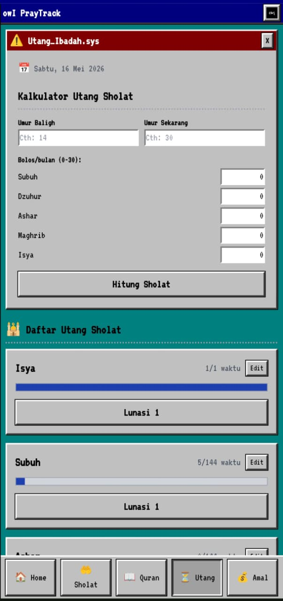
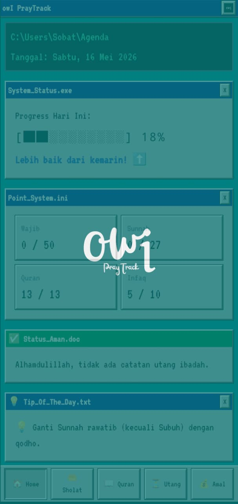
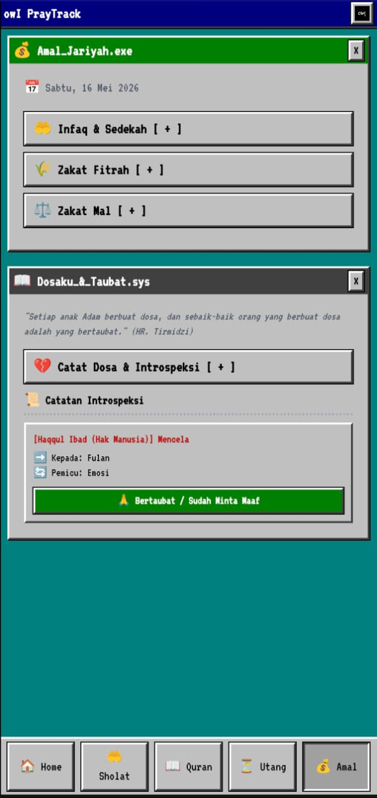
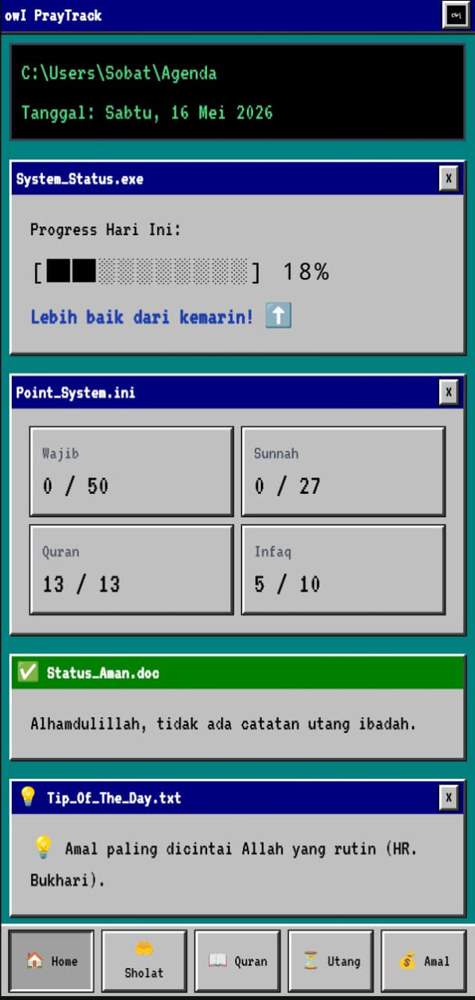
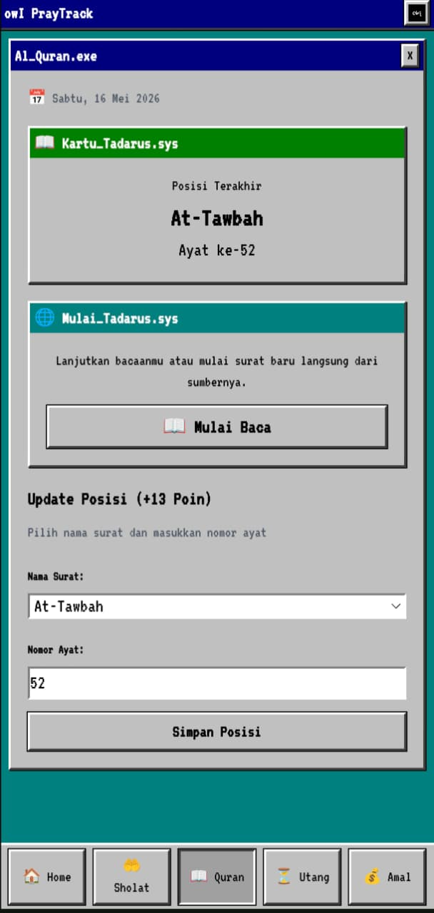
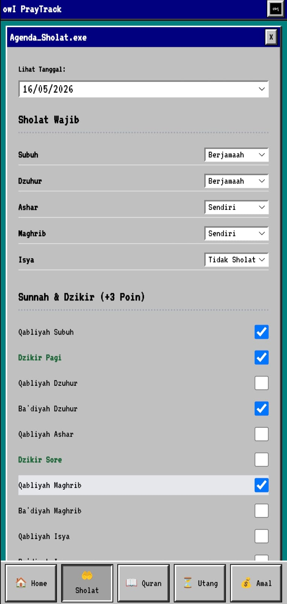

Smart Fardhu & Sunnah checklist. Selecting "Tidak Sholat" automatically generates a debt log in the Utang module. Changing status auto-cancels the debt.
Cache your last read position instantly. Integrated redirect to Quran.com for seamless tadarus continuation. +13 Poin harian.
Qadha Sholat calculator based on Baligh age formula. Systematic Qadha Puasa tracker. Visualize your debt-free journey with progress bars.
Infaq & Sadaqah logger. Auto-calculating Zakat Mal (Nisab 85g Gold = 2.5%) and Zakat Fitrah checklist.
Deep introspection journal. Categorize sins (Haqqullah/Haqqul Ibad) and triggers. Mark as repented—never deleted, a permanent reminder to change.





